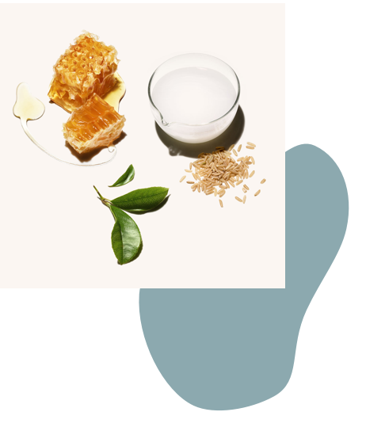

There are no legal definitions in the U.S. for advertising terms "natural" or "organic" when applied to personal care products. Consumers often express a preference for skin products with organic and natural ingredients, and the personal skin care market based on natural products has shown strong growth. Clinical and laboratory studies have identified activities in many natural ingredients that have potential beneficial activities for personal skin care, but there is a shortage of convincing evidence for natural product efficacy in medical problems.
Some natural products and therapies may be harmful, either to the skin or systemically. People prone to allergies should pay careful attention to what they use on their skin. Dermatologists may feel that there is enough scientific evidence to assist in the selection or avoidance of particular natural ingredients.
